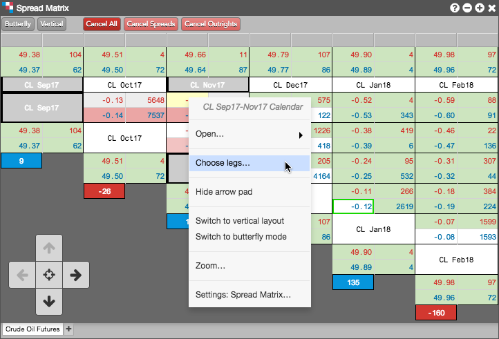
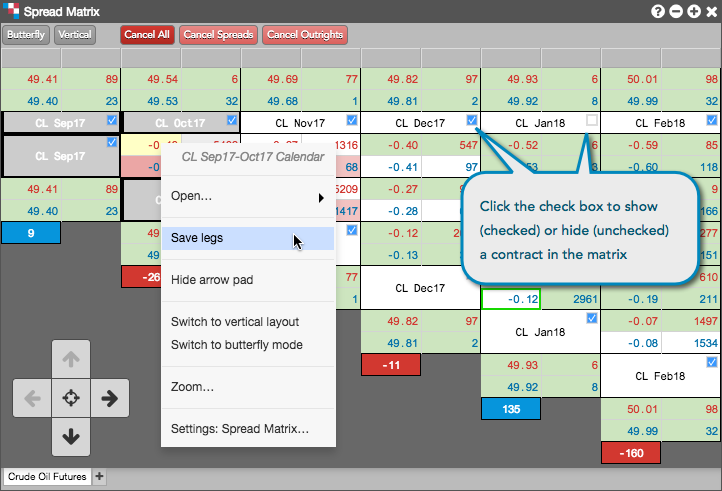

You can easily configure the Spread Matrix to display specific contract months.
This setting allows you to check/uncheck each available contract month for that product.

Click the direction arrows (if the arrow pad is shown) to scroll through the matrix across the top or diagonally to view more contracts and contract periods as needed.

Using the Spread Matrix context menu, you can display market data for a single product in a Chart widget and a Time and Sales widget. For synthetic inter-product spreads, you can also open a Chart widget.